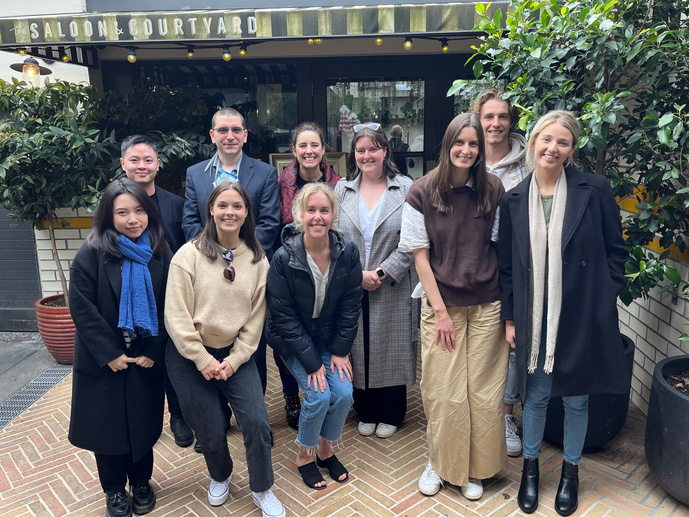
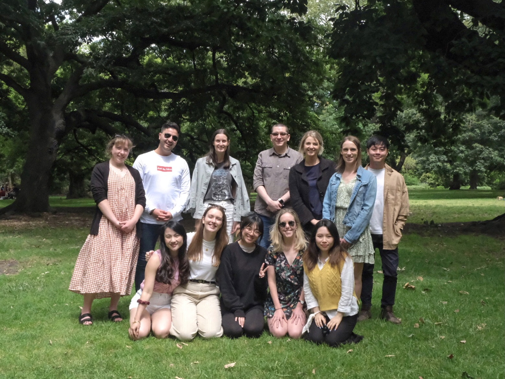
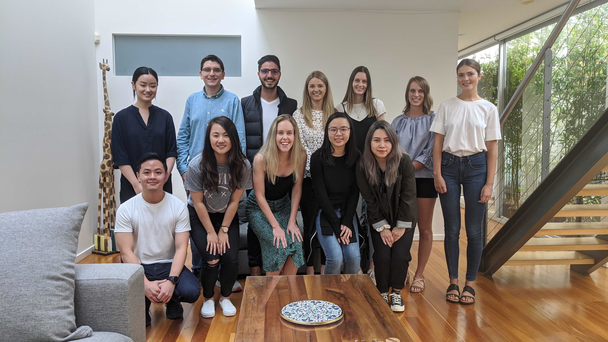
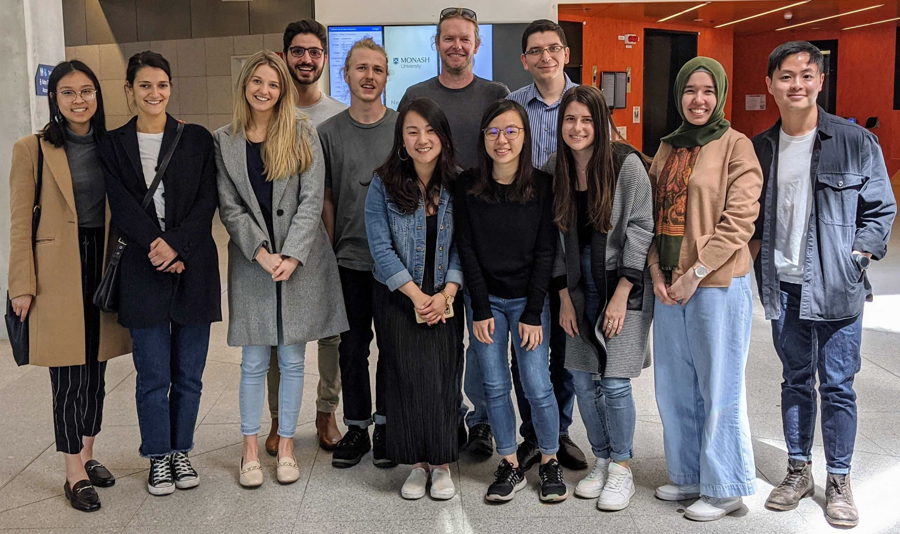

Meet the lab
15 current members
15 doctoral theses
29 Honours graduates





Current members
Lab head
Associate Professor, Monash University · Honorary Research Fellow, Peter MacCallum Cancer Centre
Phuong (Flora) Le Postdoctoral Fellow Joined 2025
Alix Mellor, primary supervisor Dr Wiley Postdoctoral Fellow Joined 2026
Kristian Bressanutti, primary supervisor Dr Wiley PhD (Clinical Neuropsychology) Joined 2026
Weiqi Cheng PhD Joined 2023
Trang Do, primary supervisor Dr Wiley PhD (Clinical) Joined 2022
Madeline Forrester PhD (Clinical) Joined 2024
Lijun Li, primary supervisor Dr Wiley PhD Joined 2023
Qingyang Lu PhD Joined 2026
Saundarya Prakash, primary supervisor Dr Wiley PhD Joined 2026
Hemangi Sanjivini PhD (Clinical) Joined 2024
Tania Wallace, primary supervisor Dr Wiley PhD (Clinical) Joined 2023
Nicole Leong, primary supervisor Dr Wiley Masters (Clinical) Joined 2026
Jessie Regan, primary supervisor Dr Wiley Masters (Clinical) Joined 2026
Hollie Wright, primary supervisor Dr Wiley Masters (Clinical) Joined 2025
Veespathip Chandrakumaran, primary supervisor Dr Wiley Honours Joined 2026
Lab head
Associate Professor, Monash University · Honorary Research Fellow, Peter MacCallum Cancer Centre
Phuong (Flora) Le Postdoctoral Fellow Joined 2025
Alix Mellor, primary supervisor Dr Wiley Postdoctoral Fellow Joined 2026
Lab head
Associate Professor, Monash University · Honorary Research Fellow, Peter MacCallum Cancer Centre
Kristian Bressanutti, primary supervisor Dr Wiley PhD (Clinical Neuropsychology) Joined 2026
Weiqi Cheng PhD Joined 2023
Trang Do, primary supervisor Dr Wiley PhD (Clinical) Joined 2022
Madeline Forrester PhD (Clinical) Joined 2024
Lijun Li, primary supervisor Dr Wiley PhD Joined 2023
Qingyang Lu PhD Joined 2026
Saundarya Prakash, primary supervisor Dr Wiley PhD Joined 2026
Hemangi Sanjivini PhD (Clinical) Joined 2024
Tania Wallace, primary supervisor Dr Wiley PhD (Clinical) Joined 2023
Lab head
Associate Professor, Monash University · Honorary Research Fellow, Peter MacCallum Cancer Centre
Nicole Leong, primary supervisor Dr Wiley Masters (Clinical) Joined 2026
Jessie Regan, primary supervisor Dr Wiley Masters (Clinical) Joined 2026
Hollie Wright, primary supervisor Dr Wiley Masters (Clinical) Joined 2025
Lab head
Associate Professor, Monash University · Honorary Research Fellow, Peter MacCallum Cancer Centre
Veespathip Chandrakumaran, primary supervisor Dr Wiley Honours Joined 2026
Alumni
Everyone who has completed a role in the lab, by year. Doctoral theses are linked. * marks Dr Wiley as the primary supervisor.
2026 1 person · 1 thesis
Caitlin Hrysanidis PhD (Clinical) thesis ↗
2025 9 people · 5 theses
Rebecca Kirkham, primary supervisor Dr Wiley PhD (Clinical) thesis ↗ Phuong (Flora) Le, primary supervisor Dr Wiley PhD thesis ↗ Elizabeth Matthews, primary supervisor Dr Wiley PhD (Clinical) thesis ↗ Tingyue Sun, primary supervisor Dr Wiley PhD thesis ↗ Rebecca Wallace, primary supervisor Dr Wiley PhD (Clinical) thesis ↗ Lucia Pavan, primary supervisor Dr Wiley Honours Elizabeth Sim, primary supervisor Dr Wiley Honours Alexander Haussmann, primary supervisor Dr Wiley Visiting Postdoctoral Fellow Shuman Wang, primary supervisor Dr Wiley Visiting PhD Student
2024 8 people · 1 thesis
Ivy Hsieh, primary supervisor Dr Wiley Staff Jessica Wilson, primary supervisor Dr Wiley Staff Hao Jun Regine Lau PhD (Clinical) thesis ↗ Olivia D’Elia, primary supervisor Dr Wiley Honours Christina Feola, primary supervisor Dr Wiley Honours Taniel Gencarelli, primary supervisor Dr Wiley Honours Philip Koe-Leong, primary supervisor Dr Wiley Honours Yun Hu, primary supervisor Dr Wiley Visiting Faculty
2023 9 people · 4 theses
Jordan Maccora, primary supervisor Dr Wiley Staff Victoria Dax, primary supervisor Dr Wiley PhD (Clinical) thesis ↗ Jordan Maccora, primary supervisor Dr Wiley PhD (Clinical) thesis ↗ Isabelle S. Smith, primary supervisor Dr Wiley PhD (Clinical) thesis ↗ David Tuck PhD thesis ↗ Amina Fazlic, primary supervisor Dr Wiley Honours Ivy Hsieh, primary supervisor Dr Wiley Honours Niva Limbu, primary supervisor Dr Wiley Honours Hollie Wright, primary supervisor Dr Wiley Honours Valeria Yau, primary supervisor Dr Wiley Honours
2022 7 people · 1 thesis
Rebecca Wallace, primary supervisor Dr Wiley Staff Yi Yang Yap, primary supervisor Dr Wiley PhD thesis ↗ Jordan Ludbrook, primary supervisor Dr Wiley Honours Gina Mancuso, primary supervisor Dr Wiley Honours Chloe Nicholas, primary supervisor Dr Wiley Honours Tania Wallace, primary supervisor Dr Wiley Honours Brett Messman, primary supervisor Dr Wiley Visiting PhD Student
2021 7 people · 2 theses
Lin Shen PhD thesis ↗ Yan Chi Tung, primary supervisor Dr Wiley PhD (Clinical) thesis ↗ Bronte Mathews, primary supervisor Dr Wiley Honours Lauren Pearson, primary supervisor Dr Wiley Honours Rebecca Wallace, primary supervisor Dr Wiley Honours Jeanette M. X. Y. Wong, primary supervisor Dr Wiley Honours Xin Xuan Yong, primary supervisor Dr Wiley Honours
2020 4 people · 1 thesis
Helena R. Bean, primary supervisor Dr Wiley DPsych (Clinical) thesis ↗ Phuong (Flora) Le, primary supervisor Dr Wiley Honours Vanessa See, primary supervisor Dr Wiley Honours Cornelia Wellecke, primary supervisor Dr Wiley Honours
2019 3 people
James Jackson, primary supervisor Dr Wiley Staff Angie Phong, primary supervisor Dr Wiley Honours Lauren Ross, primary supervisor Dr Wiley Honours
2018 2 people
Alice MacDonald, primary supervisor Dr Wiley Honours Jun Wong, primary supervisor Dr Wiley Honours
2017 2 people
Rebecca Rice-Lacy, primary supervisor Dr Wiley Honours Yi Yang Yap, primary supervisor Dr Wiley Honours
Want to join us?
We supervise Honours, Masters and PhD students, and host visiting students and researchers. We especially welcome people from groups under-represented in the health sciences.
Before you get in touch, read about our research themes and the values we work by. Studies, lived experience roles and jobs are listed on our Get involved page.